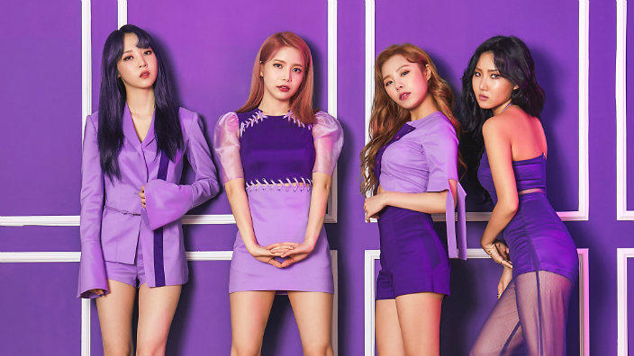

Twice (en hangul, 트와이스; romanización revisada del coreano, Teuwaiseu; estilizado como TWICE) es un grupo femenino surcoreano formado por JYP Entertainment a través del programa Sixteen (2015). El grupo consta de nueve integrantes: Nayeon, Jeongyeon, Momo, Sana, Jihyo, Mina, Dahyun, Chaeyoung y Tzuyu.
Twice debutó oficialmente el 20 de octubre de 2015 con el lanzamiento del miniálbum The Story Begins. En 2016, Twice saltó al estrellato con el sencillo «Cheer Up», el cual se ubicó en el primer lugar de la lista Gaon Digital Chart, convirtiéndose en la canción más popular del año.
La canción también obtuvo el premio como «Canción del año» en dos de las premiaciones más importantes de Corea del Sur, Melon Music Awards y Mnet Asian Music Awards.
«TT» del miniálbum Twicecoaster: Lane 1, solidificó el éxito del grupo al permanecer por cuatro semanas consecutivas en el primer puesto de Gaon Digital Chart. El disco anteriormente mencionado, fue el álbum de un grupo femenino más vendido en 2016.
A diecinueve meses después de su debut, Twice vendió más de 1.2 millones de copias, a través de cuatro miniálbumes y un álbum especial. El grupo debutó oficialmente en Japón el 28 de junio de 2017 en colaboración con Warner Music Japan a través del lanzamiento de su primer álbum recopilatorio, #Twice.
| El grupo debutó oficialmente el 18 de junio de 2014 con la canción "Mr. Ambiguous". En su debut, fue considerado como el mejor grupo de K-pop en 2014. Se reconocen por sus «conceptos» de retro, jazz y R&B |
Kim Yong-sun (Hangul: 김용선; 21 de febrero de 1991) mejor conocida como Solar (en hangul, 솔라), cantante y actriz surcoreana, es la vocalista y líder del grupo. Nació en Seúl, Corea del Sur.49 Además de la banda, ha aparecido en la serie de televisión surcoreana Imaginary Cat50 y en el show de variedades We Got Married. |
|
| Moon Byul-yi (Hangul: 문별이; 22 de diciembre de 1992), conocida como Moonbyul (en hangul, 문별), actriz surcoreana y es la rapera principal del grupo,49 nació en Bucheon, Provincia de Gyeonggi, en Corea del Sur, además es alumna del Instituto de Artes de Paekche. Ha hecho apariciones en series de televisión como Start Love y Idol Drama Operation Team. |
Jung Whee-in (Hangul: 정휘인; 17 de abril de 1995), conocida como Wheein (en hangul, 휘인) es una de las vocalistas del grupo; nació en Jeonju, Jeolla del Norte en Corea del Sur. |
 |
| Ahn Hye-jin (Hangul: 안혜진; 23 de julio de 1995), conocida como Hwasa (en hangul, 화사), es la segunda rapera, vocalista y maknae, nació en Jeonju, Jeolla del Norte en Corea del Sur. |
||